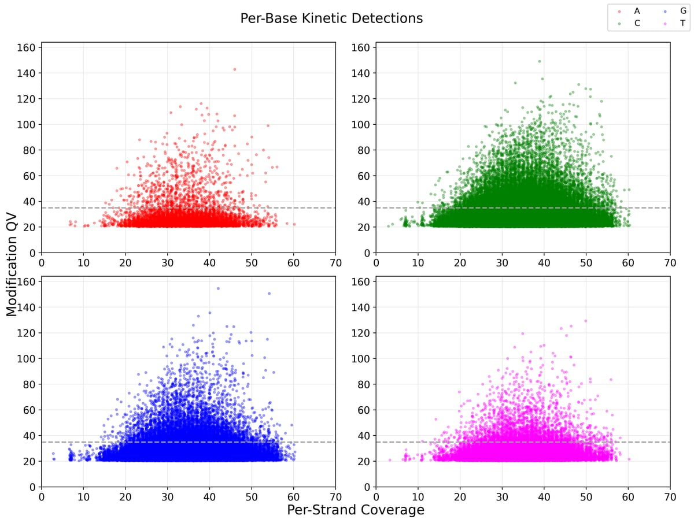

Un reporte de ensamblaje de novo microbiano reúne todo el proceso: secuenciación, ensamblaje, corrección, validación, anotación y, en este ejemplo con datos PacBio, también el análisis de metilación. Leerlo bien te ahorra sorpresas cuando vayas a publicar el genoma o a usarlo como referencia.
Para explicarlo usamos el reporte de ejemplo Whole Genome De novo Sequencing de Macrogen, un proyecto híbrido con lecturas largas PacBio HiFi y lecturas cortas Illumina. Puedes abrirlo mientras lees: está en versión HTML interactiva y en PDF.
Las tablas usan valores de plantilla (números redondos, SAMPLE1, «TEST SPECIES», GCF_000000000.1) y varios gráficos proceden de otro conjunto de datos, así que no siempre cuadran entre sí. Sirve para conocer la estructura y aprender a interpretar cada métrica, pero no describe un organismo real. Cuando citamos cifras, son siempre del reporte de ejemplo.
1. Portada, pedido y flujo de trabajo
Las primeras páginas son administrativas, pero ya te dicen algo útil. En Order Information aparecen dos tipos de librería: [3.0] PacBio Microbial Library (SMRTbell, datos HiFi) y TruSeq Nano DNA (350) de Illumina, con lecturas pareadas. Dos librerías indican un proyecto híbrido.
Las páginas de flujo experimental de Illumina y PacBio son explicativas, no específicas de tu muestra. Quédate con dos ideas: los archivos FASTQ crudos de Illumina todavía contienen adaptadores (por eso después se recortan), y las lecturas HiFi son precisas porque la polimerasa recorre varias veces la misma molécula circular y se calcula un consenso.
El Analysis Workflow es el mapa del resto del reporte. La lógica es «lecturas largas primero»:
- Con las lecturas HiFi se construye el ensamblaje (Microbial Genome Analysis, SMRT Link 13) y después se pule su secuencia consenso.
- Las lecturas Illumina, ya filtradas con Trimmomatic, se usan para corregir bases con Pilon y para validar el ensamblaje.
- Sobre el ensamblaje corregido se hacen la validación (k-mers, self-mapping, BLAST, BUSCO, ANI), la anotación (Prokka, EggNOG, InterProScan) y el análisis epigenético (motivos de metilación y CpG).
Si quieres repasar por qué se combinan las dos tecnologías, lo contamos en Ensamblaje de novo híbrido en 9 pasos.
2. Datos crudos: Illumina y PacBio HiFi
Lecturas Illumina
La tabla compara lecturas crudas y filtradas. Fíjate en tres cosas:
- Q30: fracción de bases con calidad Phred de 30 o más, es decir, con probabilidad de error igual o inferior a 1 en 1.000. Valores altos (en torno al 90 % o más) son buena señal. En el ejemplo, 90,0 % en crudo y 95,0 % tras filtrar.
- Cuánto se pierde al filtrar: en el ejemplo se pasa de 25.000.000 a 15.000.000 lecturas (read1 + read2). Una pérdida grande no es un error en sí, pero conviene que la cobertura restante siga siendo suficiente.
- GC de las lecturas frente al GC del ensamblaje: deberían parecerse. Una diferencia marcada puede indicar contaminación o sesgo de librería.
Los gráficos FastQC de calidad por posición completan la tabla: lo esperable es que las cajas queden en la zona verde y que, como mucho, caigan un poco en los últimos ciclos.
Lecturas PacBio HiFi
Aquí se resume el rendimiento de las lecturas largas. En el ejemplo: 250.000.000 pb en 30.000 lecturas HiFi, N50 de lectura de 10.000 pb, calidad media Q35 y una media de 15 pasadas.
- El N50 de lectura es la longitud L tal que las lecturas de L o más contienen al menos la mitad de todas las bases: cuanto mayor sea, más fácil resulta atravesar repeticiones.
- Average Pass es el número medio de pasadas por molécula (cada pasada es una lectura completa de una hebra del inserto); más pasadas, consenso más preciso.
- Por definición, una lectura HiFi es Q20 o superior; por eso el histograma de calidad empieza en Q20.
3. Resumen del proyecto y ensamblaje
La página de resumen es la que todo el mundo mira primero. En el ejemplo: 1 contig circular de 8.000.000 pb, N50 de 8.000.000 pb, GC del 65,0 % y profundidad de 31,25×.
Cómo leerlo:
- Número de contigs frente a número de replicones esperado. Un único contig circular para una bacteria sin plásmidos es el resultado ideal. Si tu organismo tiene plásmidos, espera un contig por replicón.
- Total de bases frente al tamaño estimado por k-mers. Deberían ser parecidos.
- Profundidad. Aquí se calcula como bases HiFi entre longitud del ensamblaje: 250.000.000 / 8.000.000 = 31,25×.
En la sección de contigs verás dos tablas: antes y después de la corrección con Illumina. En el ejemplo, el contig pasa de 7.999.990 a 8.000.000 pb tras la corrección con Pilon: una diferencia neta de 10 pb, que no indica cuántas bases se corrigieron porque inserciones y deleciones se compensan.
Los cambios pequeños son lo normal; si son grandes, conviene preguntar a qué se deben.
Dos columnas de la tabla por contig son clave:
- Circular = YES: los extremos 5′ y 3′ del contig están conectados, así que el replicón está cerrado. Además, el contig se rota para que empiece en el origen de replicación.
- Alias: se llama «Chromosome» o «Plasmid» solo si el mejor hit de BLAST cubre al menos el 80 % de la consulta y el tamaño es similar. Si no se cumplen ambas condiciones, queda como «Contig», como ocurre en el ejemplo con «Contig1».
La tabla Nx (N10 a N100) muestra la longitud de contig a partir de la cual se acumula el x % del ensamblaje. Con un solo contig, todos los Nx coinciden con su longitud.
4. Validación: cinco pruebas complementarias
Un ensamblaje continuo no es necesariamente correcto. El reporte lo valida desde cinco ángulos, y conviene leerlos juntos.
Análisis de k-mers
Con k-mers de 21 bases (Jellyfish + GenomeScope) se estima el tamaño del genoma sin usar el ensamblaje. El pico estrecho de la izquierda corresponde a errores de secuenciación; el pico principal refleja la cobertura del genoma.
Un solo pico principal indica un genoma haploide u homocigoto, así que en una bacteria la heterocigosidad debería estar cerca de cero. El ejemplo muestra 0,500 sin unidad (GenomeScope la expresa en %): en una bacteria, un valor claramente distinto de cero apunta a mezcla de cepas, contaminación o un artefacto del modelo, que GenomeScope plantea para genomas diploides.
Self-mapping
Las lecturas se vuelven a mapear sobre el ensamblaje: Illumina con BWA, PacBio con pbmm2. En el ejemplo se mapea el 99,99 % de las lecturas en ambas tecnologías, con una cobertura del 99,99 % (Illumina) y del 100,00 % (PacBio).
- Lecturas mapeadas cerca del 100 %: el ensamblaje explica casi todos los datos, sin secuencia ausente ni contaminación evidente.
- Cobertura (%): fracción de posiciones cubiertas al menos una vez. Las zonas sin cubrir pueden señalar errores de ensamblaje.
- Tamaño de inserto: debe encajar con el diseño de la librería. En el ejemplo, 450,00 pb (desviación estándar de 80,00 pb) para una librería con inserto nominal de 350 pb, en el límite superior del rango típico de 350–450 pb que cita la guía de lectura del reporte (en coreano).
BLAST
Cada contig se compara con la base de datos NT del NCBI. En el ejemplo, el mejor hit es «CP00000.1 TEST SPECIES», un identificador de plantilla, con un E-value de 0,0.
El propio reporte advierte que BLAST solo refleja secuencias registradas y que sirve para ver patrones, no como asignación absoluta de especie. Revisa la longitud del hit frente a la del contig.
BUSCO
BUSCO mide la completitud biológica buscando genes de copia única casi universales en el linaje (aquí, bacteria_odb10, con 124 grupos). En el ejemplo: 120 completos de copia única (96,77 %), 4 duplicados (3,23 %), 0 fragmentados y 0 ausentes.
- Completos altos (la guía del reporte considera bueno el 90 % o más) y fragmentados o ausentes bajos indican un ensamblaje completo.
- Los duplicados deben ser pocos. En una bacteria haploide pueden ser parálogos reales o un artefacto de duplicación en el ensamblaje.
- Los taxones poco representados pueden puntuar algo más bajo por razones biológicas.
ANI
La identidad nucleotídica media (ANI, con pyani y el método ANIm) compara tu genoma con genomas del taxón detectado por BLAST. Por convención general, el umbral más usado para considerar dos genomas de la misma especie es un ANI de aproximadamente 95–96 %.
La regla de oro es leer siempre el ANI junto con la cobertura de alineamiento: una identidad muy alta sobre una fracción pequeña del genoma es una evidencia débil.
En el ejemplo, la identidad es del 100,00 %, pero la cobertura solo del 50,00 %, una combinación de demostración (el propio mapa de calor de identidad no muestra un 100 %). En un proyecto real, una identidad alta con cobertura baja obligaría a revisar la referencia elegida. Atención también a las unidades: la página de resumen las da como fracción (1,00 / 0,50) y la de ANI como porcentaje.
Resumen de las métricas clave del reporte de ejemplo y qué buscar en las tuyas:
| Métrica | Reporte de ejemplo | Qué buscar en general |
|---|---|---|
| Contigs / circularidad | 1 contig, Circular = YES | Un contig circular por replicón esperado |
| Q30 Illumina (lecturas filtradas) | 95,0 % | Alto, en torno al 90 % o más |
| Calidad y pasadas HiFi | Q35 · 15 pasadas | Q20 como mínimo por definición; más pasadas, más precisión |
| Lecturas mapeadas | 99,99 % (Illumina y PacBio) | Cerca del 100 % |
| BUSCO | 124 de 124 completos (4 duplicados) | Completos altos, duplicados y ausentes bajos |
| ANI / cobertura | 100,00 % / 50,00 % | ~95–96 % como umbral de especie, con cobertura alta |
5. Anotación: genes, mapa circular y funciones
Prokka predice los genes. En el ejemplo: 5.700 genes, 5.500 CDS, 80 tRNA, 20 rRNA y 1 tmRNA. Para comprobar que los números tienen sentido:
- El total de genes debe ser coherente con la suma de CDS, tRNA, rRNA, tmRNA y otros ncRNA.
- En bacterias se espera aproximadamente un gen por kilobase.
- El número de rRNA dividido entre tres da una idea aproximada del número de operones ribosomales.
En el mapa circular de la imagen de portada, los anillos de CDS muestran la densidad génica y el reparto por hebra. Las caídas de GC pueden señalar islas genómicas adquiridas por transferencia horizontal, y el GC skew suele cambiar de signo en el origen y el término de replicación, aunque el reporte avisa de que esa lectura es solo orientativa.
Comprueba también la escala: en el ejemplo termina poco después de 6.600 kb y no en los 8.000 kb de las tablas, porque el gráfico y las tablas de la demostración vienen de datos distintos. En tu reporte, el mismo dato (tamaño, GC, profundidad) debe coincidir en todas las secciones.
La tabla EggNOG agrupa las proteínas en categorías funcionales COG. En el ejemplo, las más numerosas son S «Function unknown» (1.599; 29,58 %), R «General function prediction only» (669; 12,38 %) y K «Transcription» (468; 8,66 %). Que S y R encabecen la lista es habitual en bacterias.
Ten en cuenta que el porcentaje se calcula sobre asignaciones de letra, no sobre CDS: una proteína con varias categorías cuenta en cada una.
La versión HTML incluye además un visor de anotación con todas las CDS, sus coordenadas, hebra, producto, términos GO e identificadores InterPro, Pfam, CDD, TIGRFAM y EggNOG, con acceso a la secuencia proteica y nucleotídica de cada gen.
6. Epigenética: metilación desde la cinética PacBio
Las lecturas PacBio registran la velocidad de la polimerasa. Una base modificada altera el tiempo entre pulsos (IPD), e ipdSummary y motifMaker usan esa señal para encontrar los motivos que reconocen las metiltransferasas, normalmente ligadas a sistemas de restricción-modificación.

En la tabla de motivos, lo más informativo es la fracción metilada: los motivos detectados divididos entre sus ocurrencias en el genoma. Los motivos genuinos de una metiltransferasa suelen estar metilados casi al 100 %.
En el ejemplo, GGCCCSGA cumple ese patrón (2.000 de 2.005; 99,75 %; QV medio 65), mientras que BGNCCGCGGR (300 de 1.500; 20 %) y VGNCTGVDCR (1.000 de 10.901; 9,2 %) quedan muy por debajo y habría que tomarlos con cautela.
El análisis CpG agrupa por sitio las llamadas de 5mC que Jasmine añade a las lecturas HiFi (pb-CpG-tools) y estima la probabilidad de metilación de cada CpG; no evalúa la 5mC bacteriana en otros contextos de secuencia. En el ejemplo, de 1.000.000 de sitios, solo 10.000 alcanzan o superan el 50 % de probabilidad, y 2.500, el 90 %.
Que casi todos los CpG aparezcan como no metilados es lo esperable en la mayoría de las bacterias; este análisis es más relevante en eucariotas.
7. Entregables, md5 y anexos
La lista de descarga detalla cada archivo con su tamaño y su md5. Las lecturas crudas están en RawData y los resultados (ensamblaje, anotación, metilación, CpG) en AnalysisResults. El diccionario de entregables te dice qué hay en cada extensión: contigs.fasta para el ensamblaje; .gff, .gbk, .faa y .ffn para la anotación, y .sqn para el envío a GenBank.
Dos avisos prácticos del reporte: los archivos se eliminan del servidor tres meses después de emitir el reporte, y el enlace de descarga solo está activo dos semanas. Descarga pronto y verifica cada md5 (en Linux, md5sum -c debe devolver «OK»).
Los anexos recogen los formatos FASTQ y BAM, la escala Phred y la lista de programas con versiones, útil para la sección de métodos de tu artículo.
- ¿El número de contigs coincide con los replicones esperados y están marcados como circulares?
- ¿El tamaño ensamblado se parece al estimado por k-mers y al esperado para tu organismo?
- ¿El GC de las lecturas, del ensamblaje y de las tablas coincide entre secciones?
- ¿Las lecturas mapeadas y la cobertura están cerca del 100 % en Illumina y en PacBio?
- ¿BUSCO da un porcentaje alto de completos y pocos duplicados o ausentes?
- ¿Has leído el ANI junto con la cobertura de alineamiento y tiene sentido la referencia?
- ¿Los recuentos de genes cuadran entre sí y con el tamaño del genoma?
- ¿Has descargado todo y verificado los md5 antes de que caduque el enlace?
La regla general es la coherencia cruzada: el mismo dato (tamaño, GC, profundidad) aparece en varias secciones y debería ser coherente en todas ellas. Si algo no cuadra en tu proyecto, pregúntanos antes de publicar.
Preguntas rápidas
¿Un solo contig garantiza un genoma correcto? No. Indica continuidad, no exactitud. Que el ensamblaje sea correcto se respalda con el self-mapping, BUSCO y la coherencia con el análisis de k-mers.
¿Por qué mi contig se llama «Contig1» y no «Chromosome»? Porque el alias depende de BLAST: se necesita al menos un 80 % de cobertura de la consulta y un tamaño similar. Un genoma alejado de los ya publicados puede no cumplir esas condiciones aunque esté cerrado.
¿Basta un ANI alto para asignar la especie? Solo si la cobertura de alineamiento también es alta y la referencia está bien identificada (idealmente, una cepa tipo). Por convención general, el umbral de especie ronda el 95–96 % de ANI.
¿Necesito el análisis de metilación? No es imprescindible, pero se obtiene de los mismos datos PacBio, sin secuenciación adicional, siempre que se conserve la información cinética de las lecturas y haya cobertura suficiente por hebra. Es útil si te interesan los sistemas de restricción-modificación o la transformabilidad de la cepa.
Cómo lo hacemos en Macrogen
Secuenciamos en PacBio Revio, Illumina NovaSeq X Plus y Oxford Nanopore PromethION. Somos Certified Service Provider de PacBio para Revio (HiFi WGS y Microbial de novo) y te atendemos en español desde Madrid y Santiago.
Tienes este y otros reportes en la sección de reportes de ejemplo, y el detalle del servicio, en secuenciación de genoma completo. Si aún dudas entre HiFi, Nanopore o híbrido, el NGS Explorador te orienta por la rama de ensamblaje de novo.
¿Quieres un reporte así para tu cepa?
PacBio Revio · Illumina NovaSeq X Plus · Certified Service Provider de PacBio para Revio (HiFi WGS y Microbial de novo) · soporte en español desde Madrid y Santiago.
Solicitar propuesta de ensamblaje →¿Dudas al interpretar tu reporte de ensamblaje de novo? Escríbenos a info-spain@macrogen.com o info-chile@macrogen.com y te orientamos en español.